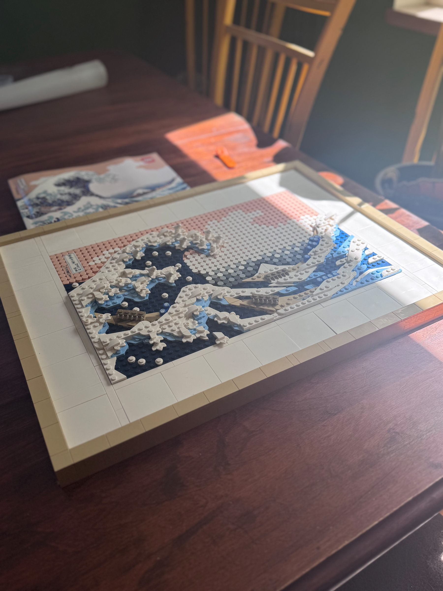
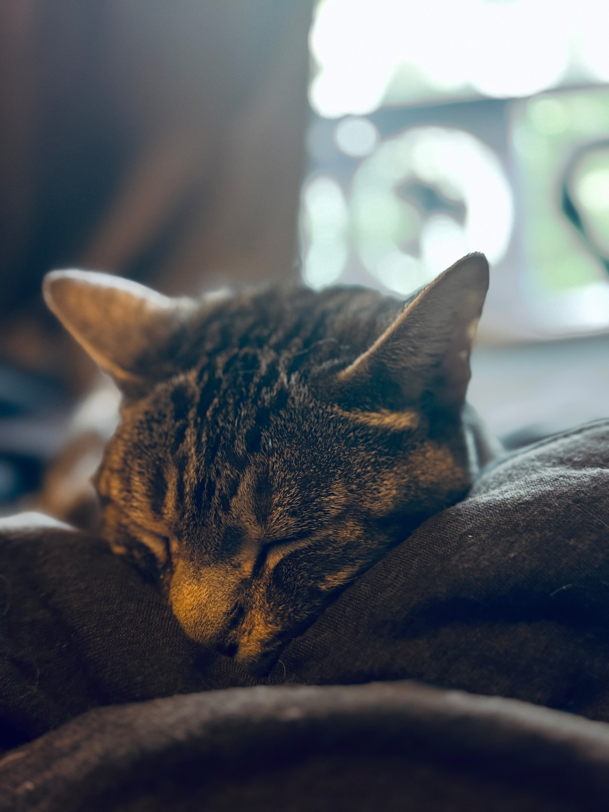
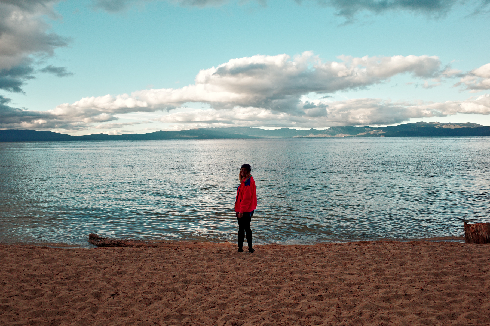
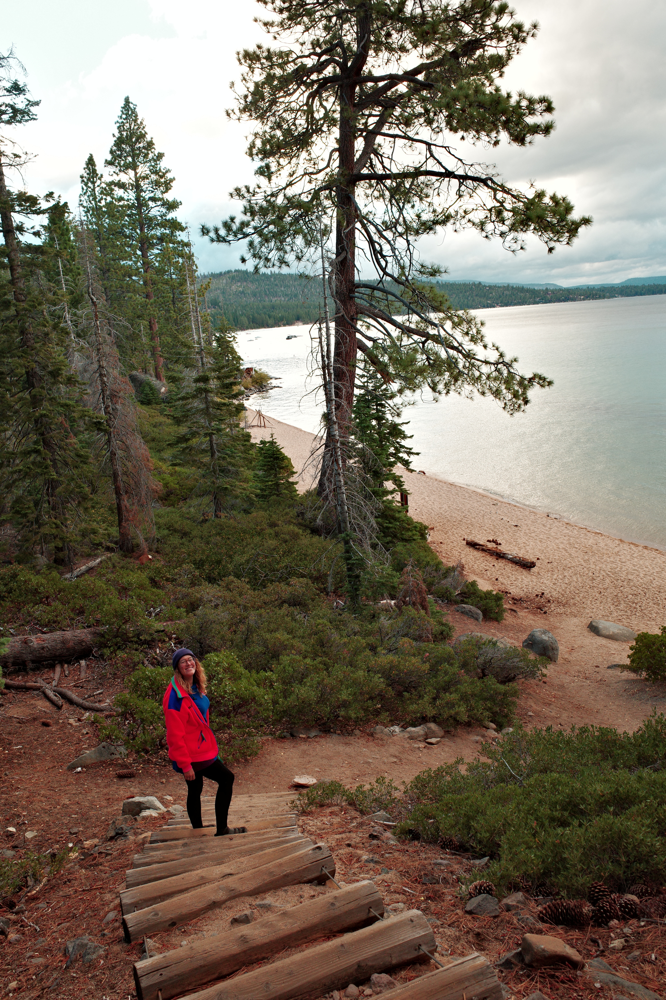
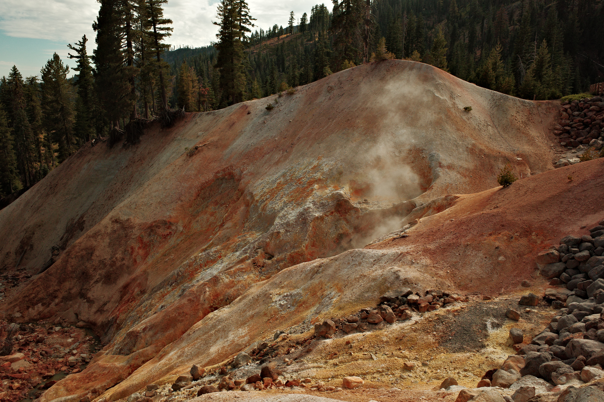
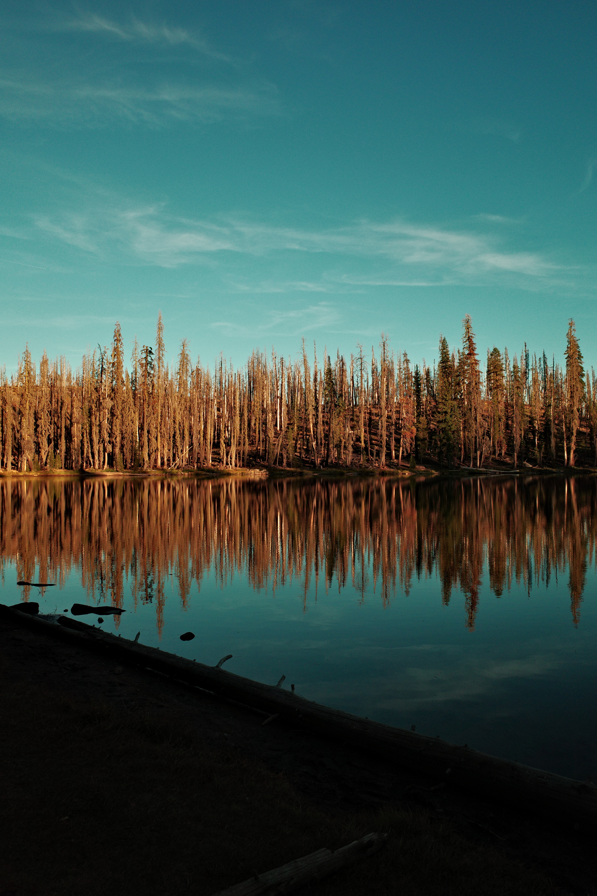

Week note - v
Week note - v This is a note about travel and illness. Two things I try hard to keep separate. Last week was the first full week of our annual Sierras roadtrip. It did not go according to plan. At first it seemed like several nights on a sleeping pad had tweaked my back. By the time we finished up in Coos Bay, I was sore and a dull pain started throbbing beneath my right rib. When we arrived in Lassen Volcanic National Park the throb transformed into a sharp and rhythmic pain. I spent my time in the Park working from my van perched in position that would rather upset my physical therapist. When I wasn’t working, I practiced convincing myself that this was, in fact, a very normal and every day sort of stabbing pain. Nothing a good ignoring couldn’t fix. I, gracefully, declined to do much hiking while in the Park to give my beleaguered body time to heal from a surely treacherous but only mundanely strained back. Wednesday we began the next leg of the trip with a four hour drive down to Tahoe. I was not much fun as far a road-trip co-pilots go.[^1] I only survived through willpower drawn from knowing a real bed awaited me at its end. When we arrived I climbed in and allowed myself to feel optimistic. That night I took my partner out for dinner1, both as a thank you for all the extra effort she was taking on for us and to (hopefully) mark a change in the tenor of the currently strained vibes of our trip. The meal was fantastic. I was certain that a night sleeping on a real bed would set things right. We popped on a movie and I took a muscle relaxer. (Some things can be left to fate, others require pharmaceutical intervention.) Shortly after the movie finished, I woke up in the (confusing) throws of pain. The dull throbbing I had attributed to the spasms of my unhappy back muscles had transformed into a ceaseless stabbing pain that drove me to tears. I woke my partner and explained we might need to make the drive back to Portland tomorrow. (I did not want to die in California.) She, the love of my life, held my hand gently, offered kind words, and then popped in her ear plugs. Before rolling over, she explained, “if I’ve got to do the drive, I need to sleep and I can’t sleep through all your sniffling and moaning without these.”
Unlike her, I did not sleep much that night, though I did manage to experiment with every possible arrangement of pillows, furniture and abdominal placement in the vain pursuit of comfort. The next morning, in the light of a new day, I decided I felt a bit better after all. Only a spot of muscular agony that’d be on its way out now that I was bundled in man’s greatest achievement—the king sized bed. I resolved to spend our Tahoe time recovering so that I could complete our planned backpacking trip that weekend. As a humble man, I met with my doctor over Zoom and accepted their prescription of a mild painkiller and muscle relaxer—a familiar cocktail that had helped me weather previous episodes of mundane and non-life threatening back pain. The day crawled on. The pain did not abate. My partner made a chili on a hot plate. I cried while watching cable TV, ever turning like a Sisyphean rotisserie chicken in pursuit of relief just beyond my grasp. Consultations with Dr. Google had me doubting my original diagnosis. It turns out sharp pain under the right rib cage was a sure sign that a variety of (arguably vestigial but certainly conniving) organs might be preparing to explode and, subsequently, kill you. (Killing you seeming to be their modern, remaining purpose.) We watched movies. I anxiously tracked the dwindling window of open hours of the one urgent care clinic in town, knowing when it closed we’d have to make the long schlepp to the ER in Truckee. There I would have to eat the exorbitant cost of American emergency medicine for something I was equally sure was either a routine pulled muscle or my appendix trying to strangle the life from me. Eventually I couldn’t take it anymore. Not the slow painful revolutions of ceiling, cable TV, bed. Nor the thought I might become one of those men who died, stubbornly, moments after saying something full of bravado and worthy of capture on a tombstone like, “it’s probably gas.” We made the drive to the clinic. After waiting what, in retrospect, was a very short amount of time that only felt like an inhumanly cruel amount of time, I was seen a kind nurse who listened to my story (long and requiring help from my partner), checked my blood pressure (pretty good) and mercifully allowed me to lie down flat on the exam table (quite nice.) Before the doctor saw us they bravely sent in a second nurse. Some kind of pinch hitter whose mission was to prepare us for the reality of the situation. She explained it could be, in fact, a lot of different things inside me hellbent on rupture and my imminent death that were causing this pain. And, with heartfelt apologies, they lacked the imaging equipment that would identify the traitorous organ. I’d probably need to go to the ER in Truckee (ideally very soon) but the doctor would confirm. In her opinion it was an awful shame they didn’t, themselves, have this technology on hand. What with the expansion and all they could be, just about, a standalone ER themselves if they set to it. I was saved from this fascinating deep dive on the economics of small tourist town medicine by the doctor. Sadly, the doctor’s initial take wasn’t much more positive (though it made it up for it by not containing a large amount of unrelated exposition.) She listened to my experience and then dutifully poked parts of me to gauge my relative and proximal suffering with a practiced but medically dispassionate finger. That was followed by some grim nodding that confirmed, to me, my imminent and unfortunate demise. As a matter of procedure she asked me to raise my shirt to check my abdomen (hairy but in my opinion otherwise unremarkable), took in my flank in an equally dispassionate manner, gave a appropriately doctorly “hm” and then proclaimed, “ah, it’s shingles.” Before me and my partner (herself having had shingles a few years back) could stop laughing I’d received a shot in the ass and a long list of prescriptions to dutifully retrieve from the lakeside CVS across the street. I recovered another day with the aide of my warmest friend, opiates, and then we made the journey back home in two parts. First a sprint to Klamath Falls, OR where we celebrated another day’s victory over my viral enemy with gas station Indian food, before a final sprint back to Portland the next day closed (one hopes) the chapter on my shingles adventure. I’m doing better, though the opiates have run out, and I’m taking this week off to recover. No organs, vestigial or otherwise, have managed to kill me. I’ve mostly spent my recovery watching movies to salve the bitterness of having my favorite trip of the year ruined. At least I did not die. ## Things I Liked ### From modern science, Hydrocodone Being in pain really sucks. The opiate epidemic is worse. I’m glad we have a bit of a middle ground where I didn’t just have to take more Tylenol even if I find myself wishing they had prescribed me a little more than the handful they did. ### From Merck, Zostavax the shingles vaccine The shingles vaccine is only available in the US to folks above the age of 50. This is a goddamn travesty. Incidents of shingles in people under the age of 50 having been rising dramatically. Shingles sucks. Let people get the vaccine. [^1]: My contributions to our chat were mostly insightful additions like “oh fuck” and some longer (though ultimately not moving) exposition on why it would be okay to kill me.
-
We had venison tartare, scallops & pork, and some ravioli that was incredible. The view from this place is the main selling point and if you find yourself in Tahoe City you should check it out. ↩︎
I’ve had a sprint of sci-fi novels (a brief obsession with the Inquisitor trilogies by Dan Abnett & a run of Culture series novels) I’d like to read some recent literary fiction. Any suggestions?
Using my recovery time to watch movies and do LEGO. I’ve owned this, unfinished, for an embarrassing amount of time. I’m excited to find a place to hang it.

Belated #caturday post. What with the holiday and all… or something. Labor resting and all that. Just look at my cat. His name is Jinx.

We’re calling our trip off early because the back pain I’ve been experiencing turned out to be shingles. Happy it wasn’t my gallbladder or something. Here’s a few photos I managed to catch.





Currently reading: Excession by Iain M. Banks 📚
Week note - iv
This week was the lead up to and start of our road trip. I enjoy road trips a lot. Driving through Oregon and Northern California is a delight. It’s. been just about 7 years since I’e moved here from Connecticut and I will never stop being awed by the natural beauty it has: volcanic mountains, misty rainy forests, the powerful forces of coast, and the starkness of the high desert.
Our trip takes has taken us, first, to the southern Oregon coast. I love it’s small towns and long lonely stretches. I really enjoyed seeing In A Landscape once again.
Since I am working from the van this week, my note is a bit shorter. This counts as my last post for Blaugust.
Things I Liked
From the Culture series novels The Player of Games and Use of Weapons, my favorite ship names
I am reading the Culture series per my brothers recommendation. So far I’ve really enjoyed the books. I’ve just finished Use of Weapons and am starting with the next.
One aspect I’ve enjoyed so far is the names of the ships. Below is a list of my favorites to far:
- So Much for Subtlety
- Just Read the Instructions
- Congenital Optimist
- Unfortunate Conflict Of Evidence
- What Are The Civilian Applications?
- Sweet and Full of Grace
- Size Isn’t Everything
Ships in the series are sentient beings with full and equal rights as all other sentients in the Culture. Ships (or at least the Minds, which are their sentient AIs) choose their own names. They seem to have a wry sense of humor.
From the podcast What Went Wrong, “The Lord of the Rings (parts 1-3)”
I think the Lord of the Rings is my favorite film series. They came out between (for me) the ages of 11 - 13 and they were incredibly pivotal piece of art to me. I’ve seen all the extended editions so many times and was lucky, a few years ago, to have experience a marathon viewing where a friend of mine cooked meals from the film.v
Hearing this detailed history of its making only increased my appreciation of the films and how lucky we are to have them. Definitely a good way to spend ~3 hours while driving.

Currently reading: Use of Weapons by Iain M. Banks 📚

Finished reading: The Player of Games by Iain M. Banks 📚
Week note - iii
I love baked ziti. Growing up in Connecticut every event called for a baked ziti. It is the east coast equivalent of the midwestern hot dish. Your neighbors invited you to a backyard barbecue? You can count on a tinfoil tray of ziti next to the burgers. Going to a pot-luck with your coworkers? Phil from accounting got that zeet.1 Italian-American food is my comfort food and ziti is, among them, uniquely nostalgic for me. It is simple to make and beloved by almost everyone.
Over the past few weeks my partner has been making lasagnas for Lasagna Love, a program where folks volunteer to (as you might imagine) make a lasagna for a neighbor in need. Consequently, I’ve spent a lot of time hovering around the kitchen as she makes delicious found I can’t have. This sparked a conversation about our shared love for baked ziti. Meaghan grew up on Long Island immersed in the same cultural ziti-geist in her childhood.
Driven by nostalgia we decided to make each other a baked ziti, inspired by our experiences back home. She made hers last week and it was fantastic, just what I’d expect from a chef’s daughter. As I write this, my own ziti is baking in the oven. I tried to recreate it the way that my mom made her’s when I was growing up. She was a single parent with limited income and two boys who ate staggering amounts of food, so cheap and simple meals that made a large quantity were a staple in house.
My mom’s approach didn’t have a recipe from grandma or begin with hours prepping a sauce from scratch. Most of the time it started with a jarred sauce she’d zhuzh up with ground beef (or whatever was on sale), pinches of dried spices from the cabinet, and some sautéd garlic & onions. A typical Sunday meant cooking up a huge pot of sauce, and rolling meatballs, eventually assembling a baked ziti and a pile of spaghetti that my brother and I would eat for the rest of the week.2
Sometimes it’s nice to have a taste of the past.
Next week my partner and I start our roadtrip. For the last three years now, at the end of the summer we pack up my old Japanese van and make our way south down to the Sierras. We camp, backpack and stop wherever calls to us and it’s one of my favorite trips each year.

I’d never thought much about the Sierras. A few years back my partner had read The High Sierra: A Love Story by Kim Stanley Robinson.3 She was immediately enamored with the author’s experiences hiking and backpacking through it. So much so she planned our first trip out there just a few months later. After that trip I felt much the same.
This time we’ll begin our trip with a stop in Coos Bay on the Oregon coast to attend In A Landscape. In A Landscape is a traveling music series that features pianist (and creator) Hunter Noack performing on a temporary stage surrounded by the natural world. Attendees are given a pair of headphones, connected to a powerful broadcasting antenna, that enables the audience to wander afar and encouraged to experience nature accompanied by his music. Noack has been staging In A Landscape for a few years combining classical piano performances with the awe inspiring natural environments of the pacific northwest. I’ve been lucky to attend one before and I couldn’t think of a better way to kick off our trip.
Afterwards, we’ll head south to Lassen Volcanic National Park. During our first road trip we had the opportunity to stop at this less frequented National Park for a night and fell in love. This year we’re excited to be able to return and spend more time in the park.
On the next leg we’ll continue south making stops in to visit Lake Tahoe and then backpack near Rush Creek in the Inyo National Forest. Before heading back up north we’ll spend a few days near Mono Lake with day trips to nearby Mammoth Lake, Yosemite or whatever calls to us.

Our final stop takes us back up to Oregon where we’ll stay at Diamond Lake Resort, a stones throw from Crater Lake National Park. Our original plan had us meeting friends here to join Ride the Rim, an annual cycling event that allows folks to bike around the lake’s rim roads. Unfortunately the event was cancelled this year but a few of us (mostly those of us who had already made a non-refundable reservation at the anachronistic resort) are still planning to get together for a few days. It is rare for us, even though we make our home in Portland, to find ourselves out that way and I’m happy for the excuse nonetheless.
Things I Liked
From Terence Eden, On Civic Hygiene
Terence takes the title of this piece from a quote by Bruce Schneier and expands upon it. Written in 2013 I find it prescient now more than ever.
I think this bears rereading and repeating, especially by those who in far away 2013 scoffed at the idea. It's relevance is widespread. You don't have to work at Palantir to be contributing to workthat will be used for harm. When I've discussed this with friends or colleagues in the past, so often I would hear some version of "it doesn't matter because if I don't do it, someone else will."It's bad civic hygiene to build technologies that could someday be used to facilitate a police state. - Bruce Schneier
But it won’t be me.
We have to be careful that the apparatus we build cannot easily be misused for evil purposes. Sure, even an innocuous toaster can be weaponised if someone is willing enough, but we should not fall into the trap of making systems which can easily be turned against the people.
Folks living in the US might be more afraid of their government now than ever, but remember that Terence was living in a different world in 2013. But the world of today is built on the foundations of the decisions made then. We’d all be wise to reflect on his foresight.
Civic hygiene isn’t about saying we distrust our current government - it’s about not trusting the next government.
From the BBC, Why travellers are obsessed with foreign supermarkets
Monuments reveal how a country remembers its past, but a supermarket shows how it lives today.
Every time I visit a country I stop at a grocery store. I do this primarily because cooking a few meals while you’re on a long trip helps save some money, but also because I really do enjoy the experience.
I am fascinated about the mundane differences in day to day lives of folks abroad. I am particularly interested in grab-and-go or ready-to-eat meal sections. They’re a peek into what is familiar or comforting to the people there.
From Mastodon, the Simple Sabotage Manual bot
The Simple Sabotage Field Manual is a document written by the US Office of Strategic Services in 1944. The manual was declassified by the Central Intelligence Agency in 2008. The manual was distributed to OSS officers in foreign countries in order to help them train "citizen-saboteurs" in German-occupied Europe.Wikipedia
From Jim Mitchell, The IndieWeb is Punk
A blog is a zine with better uptime.
During college in the 2010s I was fascinated with the zines of the 90s. I felt a sadness that I had missed out on a such a raw art that connected people but had fallen out of the cultural zeitgeist. I was, of course, totally wrong.
First, because print zines are a thriving art that continued then and to this day. And also because I was participating then and now in a descendant of that same ethos online, even if I didn’t know it. Whether it’s an online garden that collects the minutia of their niche hobby or a blog that guides folks on how to create resilient connections online, the IndieWeb has the power to communicate ideas and make me feel the same way those old zines did back then.4
Editor’s note: Originally I titled this post “Week Note - iv” when this is, in fact, only the third week note. This is because I can’t count.
-
If you’re lucky there might even be two. ↩︎
-
If we’re being honest it rarely lasted more than a few days. Sorry mom. ↩︎
-
I had only known Robison as the author of the Mars trilogy, a favorite of my sci-fi fanatic father. I was happy to learn he was a passionate outdoorsman. My partner was surprised to learn he was known for anything else. ↩︎
-
And still do. I wish I had been a little more curious about the wonderful zines people were making then as I had been about the 90s. I missed out on a lot of cool stuff. ↩︎

Finished reading: Ravenor Rogue by Dan Abnett 📚 — I think that’s enough Warhammer books for a while.
I think I have to admit defeat again with Orion as a browser as a daily driver. The 1Password extension continues to be unreliable, which is very frustrating. On top of that it seems like I am getting more frozen tabs and poorer performance than my initial go around. Back to Safari for now.
I visited Minneapolis for the first time over the weekend and I have to admit I was jealous of their cycling infrastructure. So many protected bike lanes. My jealousy was tempered by the fact I was constantly drenched in a thin layer of sweat from the humidity though. Jealous perspiration.
Week note - ii
I flew to Minneapolis for a wedding this weekend and only got back home to Portland last night, so this post is a bit delayed.
This was my first time experiencing Minneapolis and we stayed just a few blocks away from the site of Alex Pretti’s murder. It’s hard to put into words how I feel about what was done to him and the terror that has been inflicted upon the community by the state.
Alex was a nurse whose life focused on helping others. Alex was murdered for doing something righteous. As the horrors continue to build up around us, threatening to extinguish in us the voice that compels us to do what we know to be righteous, it is important that we don’t give into the despair. We owe it to Alex and so many others to continue the work.
"We live in capitalism. Its power seems inescapable. So did the divine right of kings. Any human power can be resisted and changed by human beings." - Ursula K. Le Guin, National Book Awards speech, 2014
The wedding was beautiful.

This Week’s Collection
From Wikipedia, “Frederick William Gunn"
Frederick William Gunn (October 4, 1816 – August 16, 1881) was an American educator, abolitionist, and outdoorsman, who in 1850 founded The Frederick Gunn School (formerly known as The Gunnery), an independent school in the small town of Washington, Connecticut, and America’s first summer camp.
I grew up in Connecticut where elite private prep schools are common. In the 20-odd years I spent there, I never heard of The Frederick Gunn School (prev. The Gunnery) or it’s founder.
Gunn was a moral beacon for the wider community accepting girls, African Americans, Native Americans, and international students into his school. Among his first students were the children of abolitionist and author Harriet Beecher Stowe.
He was also referred to as “the founder of leisure camping” in America. He was known to have had his students march 40 miles from Washington to Welch’s Point in the town of Milford, CT where they camped. He believed that a love of nature and physical fitness was core to education.
A brief look at some of its recent notable alumni doesn’t inspire much confidence that his core message is being instilled in its students today.
From the Electronic Frontier Foundation, their art library
All of their art is CC BY 2.0 licensed if you’ve ever needed something to fill out a blog post.

From TechCrunch, “Historian Jill Lepore says Silicon Valley misreads science fiction and undermines democracy”
She argued that many of Silicon Valley’s “charismatic or not-so-charismatic leaders” — especially Elon Musk — seem to be ushering in a future pulled from misread pulp science fiction and comic books. “But what’s funny about Musk is, the stuff he likes actually completely defeats and defies all of his political beliefs.”
The techno-capitalist class are happy to co-opt the aesthetics of science fiction, without caring for the meaning. They’re of the same mold as self-identified “right-wing punks.” The disconnect exists in companies that draw names from Tolkien’s work like Palantir, Anduril and Mithril Capital.
The underlying message, no matter how clear it is, is irrelevant to them. They only want to emulate power or perceptions of grandeur. At the worst end up the spectrum they revel in the perversion of the thing.
I love science fiction and the ability it has to grapple with possible futures and to give us create better ones. Some people love science fiction for the fantasy of power and war.1
“I believe that all organizing is science fiction — that we are shaping the future we long for and have not yet experienced.” - adrienne maree brown
-
I’m currently reading my way through the Warhammer 40k Inquisitor trilogies, so take my opinion with a grain of salt. ↩︎
I demand that PDX start selling merch with the absolute banger characters they’ve created. I would fight a person for one of the giant sticky notes featuring these little weirdos they hung during the construction.
Even this serene donut dude on the wifi landing page is great.

Look I know there’s a lot of bad things happening in the world right now, but what really grinds my goat is email apps in 2026 defaulting to adding a “sent from phone” type line to your signature.
No one receiving it cares and nobody sending it wants it. Stop it. This is crime.
Lately I’ve been enjoying more newsletters. Some favorites include Dense Discovery, Citation Needed, and (rip) Naive Weekly.
I’m always looking for weird and interesting newsletter recommendations if you’ve got any to share.
One change I’ve made is trying to replace my doom scrolling habit with Kagi’s small web tool. It’s a spiritual successor to StumbleUpon that takes you to a random indieweb page. It’s been fun to see so many personal sites I’d otherwise never encounter.
I pulled the trigger on a Kagi subscription and moved my browsing back into Orion. Orion still has rough edges, but Kagi’s search is a superior product. The biggest hurdle was psychological. My brain’s knee jerk insistence that search should be free.
I’m pleased with the latest design changes I made to my blog. I’ve been collecting inspiration from other small web blogs for a while and finally implemented a few vanity features. My favorite: switching my footnotes to a “marginalia” style.


Watched: Over Your Dead Body 🍿 - 3/5

Watched: They Will Kill You 🍿
Week note - i
This past weekend was my birthday. My partner and I celebrated by camping at Cape Lookout on the Oregon coast. We had dinner at Willy’s in Oceanside. Run by a husband and wife team they serve Japanese comfort food in a beach town nestled on a cliffside.
The Oregon coast is a special place for me. It feels otherworldly. It is one of my most unexpected pleasures I discovered since moving to the state. Wide, often empty beaches, shrouds of mists crawling over groves of pine. The chance at glimpses of sea lions or even whales.
My favorite moment was our sunset campfire on the beach. When the sun finally fell beneath the horizon the distant dots of other camp fires were the only indication you weren’t utterly alone in the emptiness.
Things I liked this week
From Things to Click, “Ghost Words, Part 6."
A list of haunted words. My favorite:
Ghost Newspapers: “Most towns still have a local newspaper, but they don’t cover their communities any more.”
From Tent, “how do you tell the difference between a jetty, pier, quay and wharf?"
I understood this list of words at best as “descriptors of areas near the water” and have dutifully avoided using them without having been prompted by someone else’s usage. This post cleverly lays them our in a memorable way.
From the Port of Hood River (email received), “EMERGENCY BRIDGE CLOSURE”
![A photo of an upside down osprey named Bridgette is being held in a blanket, with its talons prominently raised, as part of a rescue effort to return the bird to its nest. The photo includes some of the content of the email that explains he Hood River–White Salmon Bridge will temporarily close today, August 7, at 4:00 p.m. for up to approximately 30 minutes so a young osprey can be safely returned to its nest. The bridge will reopen as soon as the rescue is complete. Earlier this week, the baby osprey fell from its nest and has since been receiving treatment for lead poisoning. Wildlife experts have determined that its best chance for survival is to be returned to its nest as soon as possible. We know a closure at this time of day will be a major inconvenience, and we sincerely appreciate the community’s patience and understanding while crews help give this young osprey the best chance to survive and return home. Thank you for giving Bridgette a little time to help one of her feathered neighbors.](https://cdn.uploads.micro.blog/188176/2026/bridge-closure.png)
From Behind the Bastards, “The Origins of Terror in Palestine” (parts 1 and 2)
Robert Evans' podcast is usually focused on a single bastard. This two parter, where he is joined by Palestinian political scientist and author Dr. Dana al-Kurd, instead explores the origins of terror in Palestine.
On finding purpose in customer support
I wrote this post as my submission to the August edition of the IndieWeb Carnival, which each month invites folks to write something on their blog based on a topic proposed by a rotating host. August’s carnival topic is “purpose” and the host is Chris Shaw. I am also double dipping and counting this as my first post of Blaugust 2026 - a community celebration of blogging.
For the last 15 years or so my job1 has been (more or less) to think about and build the mechanisms to deliver customer support for companies who (more or less) make software on the internet that (more or less) helps other businesses do something more efficiently. In that time I’ve said a lot of things about what the purpose of that labor is. Support as the face of your product. Support as your connection to your customer’s needs. Support as a viable, valuable and under-appreciated career. My understanding of the purpose of the work has shifted and grown alongside me.

The latest evolution of this opinion has less to do with changes in my own view of the work and more to do with changes in the macroeconomic landscape. While the death of support has been confidently decried many times in the past, I believe a time of transformation is really at hand - even if there is life still in the profession. I’m certainly not the first to say that AI - and more precisely LLMs - are dramatically changing both the support customers receive and the daily lives of the people giving it. At no time in the past has it been so easy for a company to give somewhat acceptable answers at such low costs and, debatably, quality.
Every recent YC batch is packed to the gills with companies offering the next greatest AI support tool (whose founders largely have never done customer support.) Much ink has been spilled about the death of legacy service leviathans like Zendesk and the ascendant rise of the AI-natives, Decagon or Pylon or whoever. Some of these tools are even good. They leverage sophisticated workflows and data connectors that dutifully and (more or less) accurately answer customer’s endless inquiries.
The purpose of a customer support team (or at least the good teams) has never been answering basic customer questions. Those questions are only the most easily quantifiable and measurable expression of customer support. They’re only the shadow on the cave wall of your customer’s experience.
The AI tools are built by product managers to automate away the lowly and tedious work of support. They cheerfully deliver answers to these questions, instantly and endlessly, at a quality we’ve never seen before. But designing for this is fundamentally flawed. They mistake the shadow for the underlying truth. They are not replacing the real value of your team.
The purpose of your support team, framed in capitalistic purity, is enabling your customers to realize the value of the widget you’re selling. The questions asked are a manifestation of the friction your product adds to this process. Modern software is the monstrous result of groups of people with narrow targets and Quixotic goals competing across the surface of your product. This amalgamation rarely represents what is good or useful for your customers.
The purpose of a support team is to know the thing itself and not the shadow. They are tasked to understand customers. Through regular observation and interaction they become the best source on the customer’s actual goals and needs. An understanding not contaminated by a product group’s incentives by way of their myopic metrics. They must understand so that they can communicate and advocate on behalf of the customer’s true needs and experience.
My hope is that great teams and products will use the time they gain back from AI handling the rote and rhythmic questions to give their support team’s more time to focus on this higher purpose. Time to write up product findings that reduce customer confusion. Time to sit in on product meetings to offer guidance that steers new developments away from pitfalls.
My fear is that most teams will just become smaller teams, still burdened with the reactive work of answering a harder set of questions.
I’ve never watched any Star Trek. Not the shows or the movies. Maybe it’s time to dive in? What’s the best entry point?
Has anyone found an app (ideally available on iOS) that allows you to easily consume your Bluesky and Mastodon feeds in one place that they really enjoy?


Wholeheartedly support the em dash. psychotechnology.substack.com/p/em-dash…

Oregon is the absolute leader in America’s city flag game. The newest addition is Oregon’s City municipal elevator inspired update.
It joins the ranks of OG great Portland and recently redesigned Hillsboro who all buck the trend of crappy seal based city flag.
#oregon #flags


Summer slows and trips do to
Earlier this month my partner and I were in the thick of preparing for our annual summer adventure. We were fixed on a road trip in our ancient Japanese van (Vancent) that’d take us from Portland, OR out to Whitefish, Montana. We planned to start with three days of bikepacking through the outer edges of Glacier National Park. Afterward, we’d booked camp sites in the park we’d pass the days hiking the best trails of Glacier before heading back home. I’ve never been to Glacier National Park or even Montana and this felt like a perfect introduction.
But then it started raining. And we started worrying. Both of us have adventured in the rain before. In fact, I don’t think I actually saw Mt. Blanc during our entire trip around it, covered in clouds and falling rain as it was. But then it got worse. Bad enough to close sections of the park and put my glacial dreams to pasture. Left with only a few days before our intended start we pivoted into planning mode. Our goal? Drive somewhere that would be warm, dry and have plenty to do outside.
The same storm that drowned Whitefish was done drowning our dreams. It had submerged much of the western US and Canada in dense and oppressive rain. We bandied around options to each other nervously in passing. As I brushed my teeth, “Vancouver Island?” Wet. While she makes coffee, “Idaho hot springs bike tour?” Drenched. Moments after turning of the bedside table lamp, “The Oregon coast?” As usual, drippin'.
My partner, Meaghan, pulled is together for us in the end. The Oregon outback. Acts of vacational genius aren’t out of the ordinary for her. Her adventure resume spans continents, shepherding groups of excited friends who didn’t read the Google Doc to remote peaks and sublime dinners.
Meag likes planning adventures where you see it all. Her desire not to miss a thing fills a weeks off with hikes, dinners, and long drives to remote spots on the advice of a two year old reddit thread.
I like haiku. It feels more like finding than writing. Turning words over in search of one that slots in perfectly within the syllabic gaps. The result, is just a few lines, but ones I would not have found without the pressure of the constraints.
This trip, which is otherwise quite unlike short form Japanese poetry, was also the result of constraints: freak weather drowning out the western US, an elderly van only capable of trudging up hills at 30 miles, and an incredibly narrow planning window threatened by the ominous approach of a national holiday whose debauchery draws thousands into nature.
The plan required the weight of meaty hands to massage it. It had to be manhandled. An itinerary forced to fit around the sharp angles and into the stifling corners of forces beyond our control. All the while it’s seams, breakfast menus & packing lists, strained. Threatening to give way into defeat. Until, at last, a plan plopped out. A good one.
Part I: The Inland Sea RV Park
Summer Lake is an alkali puddle about two hours south of Bend. It is part of the high desert of central Oregon. At high water the lake runs 15 miles long and 5 wide with an average depth of barely a foot. At its southern end sits our first stop, a handful of buildings and RVs dropped haphazard on the receding edge of the basin. Summer Lake Hot Springs started out in the 50s as a locals hang. Just an RV park sporting a rough board structure they called the bathhouse providing cover for a single natural hot spring fed pool.
In the 80s a college student from Eugene took a liking to the springs and the remote landscape. For years he made frequent visits until luck lined up and gave him the opportunity to buy it in 1997. He started a long and ongoing journey, transforming the place into a spiritual and healing focused destination, with an RV park.

Today it has 10 cabins (using eco-friendly materials like pumicecrete whose air bubbles provide pockets of insulation to smooth out the extreme swings in temperature common to the desert region) and the bathhouse has sprouted 3 more outdoor spring fed pools. Mingling in the silica rich waters you’ll find Burners fresh from the playa (who get two weeks blocked off each year bookending the festival) and the same middle aged RV locals who’ve been pitching tent and slepping fifth wheels out here to the springs for decades.
We spent our time here gently floating away the hours, the hottest parts of the day spent in the cooler covered pool of the bathhouse and the evenings whiled away in the outdoor tubs watching the stars.
Just twenty miles up the road from the hot springs you can find the Summer Lake Wildlife Area. It’s a 30 square mile plot of wetlands that’s a vital habitat for a whole heck of a lot of migratory birds. There’s a long gravel loop that stretches much of the park. A perfect choice for a midday meandering car crawl. Savor the AC while you lazily gander at waterfowl that’d make an elderly birder foam at the mouth. (For the thrifty, it sports a pretty nice free campground with enough open sites for you and all your friends.)
Part II: The Fastest Land Animal in North America
We left Summer Lake heading south, passing through the town of Paisley. There isn’t much in the town but nearby you can find the
Paisley Caves that contain remnants of the oldest definitively-dated human presence in North America, dating back to 14,000 BC. Back then Paisley and much of the rest of the land of Lake County it sits in were underwater. The dusty and wide empty basins of today were once filled with the waters of the retreating glaciers.
Back then Summer Lake was part of Lake Chewaucan, a body that spanned almost 450 square miles and had depths of up to 375 feet. Driving out of the basin I tried to imagine myself at the bottom of such a deep lake in such a dry place, my eyes tracing the ridges around us searching out any mark I could find that might tell me where the water stopped. We weren’t long for Paisley, just a quick top up on diesel before we set out for the next stop.
If you’re like me you’re often surprised by how the puzzle piece states of the west fit together. As a swamp yankee of Connecticut I’d nod along when you told me that Nevada, Oregon and California all fit together neatly but as soon as you’d left I’d have to pull out my laptop and trace my finger along the lines in Google Maps to be sure.
Today we’d be putting that to the test. Meag knew of road we could park on and if we walked in a pretty straight line from there we could find a stone left by a guy back in the 1800s marking the place where he reckoned all three states came together. There isn’t a lot of traffic to the tristate point (the ole 4 corners steals the show, I guess) and there wasn’t a path to follow, just the green line of Alltrails and a lot of scrub to walk through. As we walked, Meaghan remarked that it was just like being on the Oregon Trail. I couldn’t help but contest petulantly that those folks had a trail. It was in the name.
About 2 miles out and over a barbed wire fence topped with a worrisomely old wood ladder you’ll be rewarded with a rock with the state flags, worn and torn, standing watch over it. We stood around it, trying our best to fit into all three states at once. Then, contrarian millennials that we are, we took out our phones to trace what Google had to say. Just a couple yards off we performed the same ritual on the place Google Maps had deemed correct, trying to imagine those lines as real. As we tottered back over the fence and towards Vancent, we caught sight of a lonely post. A survey marker from June that year, with the three states names scratched in. One more place to try again.
Our stop that night hooked us north and then east to the Hart Mountain Antelope Refuge. Hart Mountain sits snug in a long north-south trail of shallow lakes, looking over a tiny handful of communities like Plush, whose 39 residents say their town was named from a mispronunciation of “flush” during a game of cards. I’d never heard of Hart Mountain but Meaghan’s fingers turned over Google Maps and drew it out, little dowsing rods to anywhere with free camping and a hot spring. The refuge was created back in 1936, a collaboration between hunters and naturalists who saw the writing on the wall for the local population of American Antelope and had the wherewithal to do something about it.
At the plateau that surrounds the peak you’ll find a wide sea of grassland, a high desert environment that is rapidly disappearing in America. It doesn’t take a gamesman to spot the antelope that stroll lazily through it, chomping away at the tall grasses. Supposedly the fastest land animal in North America they don’t have any hurry about them up here.

Vancent, tired from the long climb up to 6k feet, is happy to chug along slowly as we take them in on our meandering journey to our campsite. Hart Mountain’s Hot Springs Campground is another gem of central Oregon nature. Wide sites and plentiful pit toilets with long reams of locked toilet paper. For nothing, you can spend 14 days straight out here and enjoy the view but it seems most of us were up there for the hot spring.
A ranger said that the current bath was carved out with a heck of a lot of dynamite. I don’t know if I believe him but I like it so I’ve been telling everyone it’s the truth. It is an awfully deep pool though. The last step off the ladder is a leap of faith where my toes touch the sandy bottom and my head slips under the water. A rough stone wall about chest height surrounds the tub. It can easily sit 10 adults shoulder to shoulder. If there’s too many folks jockeying for space (not likely out this far) or someone’s decided to play music on their speaker (sadly much more likely), you can walk a little ways away and enjoy either of the two ‘primitive’ springs. They’re shallow pools, no more than a foot deep, that run hotter than I’d like.

The refuge is chock full of pronghorn, a deer-like animal that is also known as the American Antelope. During the hot parts of the day we take lazy drives down the refuge’s gravel roads to gawk at them. The antelope are prone to lazily scratching their heads against bushes and eyeing us cautiously while they much on the grasses around them. Meaghan and I trade my binoculars back and forth to scan the distant cliffs for mountain goats without success.
Part III: How To Canoe Hundreds of Miles When You’re 70
Hart Mountain to Portland is a long haul and we decided against doing the whole drive in one day. Before we left it was my job to find somewhere worth stopping.
I’d like to say I went about my planning with the same meticulous skill as Meaghan, but the reality wasn’t pretty. I cast wide and gormless searches across Airbnbs and thumbed clumsily through empty squares of Google Maps looking for anything, but only came up with sticker shock and mounting anxiety.
It was only by accident that I landed on something special. The HipCamp listing showed a small lake somewhere south of Bend with a single open space on July 3rd in a ger, which I only then learned was the name for a traditional Mongolian yurt.
David, our host, ended up with the two gers on his land by accident. About 10 years back, in his early 70s, the former 501st airborne vet set out to Mongolia with his dog Stormy and the determination to paddle his way to over to and around Lake Baikal. He didn’t finish the whole trip, but he did end up with first pick in a shipping container full of these beautiful yurts. David is built different.

One of the best parts of staying in the yurt is that David stocks it with his own prolific writings including his journals that tell the story of that trip. If you want to know more, the best way to do that is sitting at the lake flipping through his binders yourself. Preferably with a cold beer.

David’s yurt sit within a small private plot (once a mining claim) in the Newberry Volcanic National Monument right on the shore of East Lake. Nearby you can find a place that is as otherworldly as it’s name is literal the Big Obsidian Flow. The flow is pretty large, composed of roughly one square mile of pumice and volcanic glass. A short trail loops through human sized boulders of obsidian and sea of grey pumice that is at odds with the serene pines and lakes surrounding it. It feels like another world was teleported in and dropped unceremoniously in the woods for us to gawk at.
Going Home
It’s always sad to pack up the van for the last time on a trip. Lugging the now featherlight crates whose frantic packing in the weeks before had caused so much stress now filled me with that familiar melancholy. A return to the routine. All the nagging demands that being alive requires. Vacuums that need vacuuming. So very many cups left out in such odd places that needed fretful guiding to a dishwasher that somehow always needed emptying.
As we drive back through long and empty stretches of high desert I imagine what it was like to walk through these places before there were roads. I wonder about the last time someone stopped beneath a particular nice tree to sit for shade. I think about when our next trip will be.
Why hasn’t Games Workshop licensed out a mech warrior style Imperial Knights game? I want to start as a new pilot and build up to a titan.


I took this photo of my dog about a year back when I first got my Ricoh GRiii. It was a test for a film recipe. I am surprised by how much I still like it.
The Ricoh is a near perfect adventure camera. I do miss having a viewfinder, though.
The dog is cool too. Her name is Hex.
#photography #ricoh


Watched: I Love Boosters 🍿
While camping we met an old geologist who’d been living a super frugal #vanlife style for years and had so many practical tips for how he lived comfortably on the road. Man loved 5 gallon paint buckets as stools, toilets, water proof storage (not at the same time.)
I want to meet more folks like him
One thing I’ve been thinking about is how amazing every NPS park ranger and FWL/NFS employee I’ve ever met is. Friendly, passionate and so excited about our excitement for the natural world. Truly some of America’s greatest public servants.
I am not proud to admit I touched this to check. An outlet sticker in a pit toilet bathroom at the hot springs campground in Hart Wildlife Refuge.


Spending the week wandering around Oregon again. Highlights so far include: Crack-in-the-Ground, a 2 mile canyon wrenched into the earth in the middle of the desert. Summer Lake Hot Springs and Wildlife Refuge. A neat floor lamp.


This is great. Currently making wiggles out of my excessively large photo library. lmao.center/blog/wigg…
I also got to see local transportation hero and vigilante the Unipiper. Did not have an opportunity to ask him his thoughts on my bumper sticker.

Went to “Zoo Brew” at the Portland Zoo last night. My primary take away is that some lions like to be squirted with a spray bottle full of milk.
I’m looking for a new #browser. I was using Orion by Kagi but I kept running into snags that made my fall back into Safari. I’m interested in a browser this is fast, battery-efficient, and respects/protects my privacy. Zen looks interesting. What else is there?
Spending the morning reading the Wikipedia list of individual trees looking out at the Pacific Ocean.

Mentally preparing myself for my 100 mile ride by reflecting on how my 65 mile ride didn’t kill me entirely. If I never post again it’s because I was wrong.


Yesterday’s rain and wind shook all the buds free from the tree in our backyard. Now everything is blanketed in a soothing and soft green blanket.
I dig it.
A love letter to bicycles
“Get a bicycle. You will not regret it, if you live.” Mark Twain, Taming the Bicycle
Bicycles are tools for joy
Riding a bike is like flying. I shift my center of gravity and the bike beneath me responds, changing trajectory. I imagine I am like a bird. I am adjusting my wings to cup a rising thermal, effortlessly carried upwards. On my feet I am not graceful. I have been accused many times of being clumsy. Off-kilter. You wouldn’t pick me first for your beer league kickball team and you’d be right for doing so. (It’s ok.) When I am riding my bike, though, I feel like I can taste what it means to be graceful.
“I began to feel that myself plus the bicycle equaled myself plus the world, upon whose spinning-wheel we must all learn to ride, or fall into the sluiceways of oblivion and despair. That which made me succeed with the bicycle was precisely what had gained me a measure of success in life: it was the hardihood of spirit that led me to begin, the persistence of will that held me to my task, and the patience that was willing to begin again when the last stroke had failed.” Frances E. Willard, A Wheel Within a Wheel: How I Learned to Ride the Bicycle, with Some Reflections by the Way
I wouldn’t say I am a great cyclist. I can’t do a wheelie as much as I try. You won’t catch me zipping coolly down a mountain bike course either. But in my years of biking I’ve built up a trust in my body that I haven’t found anywhere else. Can I climb this hill and go another 40 miles? Slowly and out of breath, but definitely. More times than I can count, I’ve found myself barreling towards disaster only for my body to take control. Unconsciously driven, a palm shifts my bars to the left, and my core stretches out, weight lifting off the seat – transforming my reckless bombing down a rocky trail on a loaded touring bike from a prelude to the hospital into a controlled dance. I hurtle over rocks and around holes my mind hasn’t had a chance to process.
Bicycles are tools for freedom
“It is by riding a bicycle that you learn the contours of a country best, since you have to sweat up the hills and can coast down them. Thus you remember them as they actually are, while in a motorcar only a high hill impresses you, and you have no such accurate remembrance of country you have driven through as you gain by riding a bicycle.” Ernest Hemingway, dispatch in Collier’s, September 30, 1944
I love bikes. I’d been smitten with them for years, but I remember the very day I fell in love. It was an autumn day and the afternoon was warm when I descended from the trees of Forest Park into the rolling farms of the Willamette Valley west of Portland. I pulled my new bike over to the shoulder of the road and looked around, unabashedly beaming. I rode myself here. I took my bike out the front door of my house and under my own power climbed up the winding trails of Forest Park and out into the valley beyond the city. I had never taken myself so far before. I still had miles to go but I was buzzing with the joy of it. The joy of my own freedom.
Bicycles are tools for solidarity
I don’t think it is a controversial statement to say that cycling advocacy has a loud and engaged population of white men. As a white man, I can’t help but think this might be in part because riding a bike is often the first time folks like me have encountered structural inequities first hand. The experience can be especially jarring for those who’ve grown up reaping the benefits of male and white privilege.
Being on a bike engenders a sense of personal freedom. At the same time riding a bicycle in America places you squarely in a world that does not prioritize your safety. You’ll encounter infrastructure that serves to protect people in multi-ton machines and dismisses the danger faced by bike riders. It’s not hard to find people who reject bicycles as equal users of the road (check the Portland subreddit if you haven’t had the pleasure of meeting these people.) Worse, it is sadly common to pin the blame on cyclists murdered by cars, even when the driver has been grossly negligent. One study in America shows that only 12% of drivers face criminal penalties when their actions resulted in the death of a cyclist. (League of American Bicyclists, 2012)
It isn’t inherently bad that bicycles are an entry point for many white men into the world of injustices, but it is critical that they use that experience to build allyship with broader communities who face discrimination and the movements to right these injustices. The lens of being a cyclist can be a gateway that makes it easier to understand the needs of others who face different discrimination in mobility or transportation access and to rally individuals to use their privilege to provide support for their causes. (Interested in this? Check out Bicycle/Race: Transportation, Culture & Resistance by Adonia E. Lugo, PhD)
Bicycles have long had a place in resistance and equal rights movements. There is a rich and powerful history of bicycles in women’s liberation. I couldn’t begin to capture the depth of this in my love letter, but I recommend Revolutions by Hannah Ross or Portland-local Elly Blue’s Bikenomics as great places to start learning.
Bicycles have a power that builds intersectionality. They’ve been tools in the struggle for Black liberation. (See Kittie Knox) They’ve been tools to support resistance across the globe. (As seen in Mexico) They’ve been a pathway for allies and supporters to protect groups pushing to be heard in protests and movements. (Thank your corker.)
“Let me tell you what I think of bicycling. I think it has done more to emancipate women than anything else in the world. I stand and rejoice every time I see a woman ride by on a wheel. It gives a woman a feeling of freedom and self-reliance. It makes her feel as if she were independent… the picture of free, untrammelled womanhood.” Susan B. Anthony, interview with Nellie Bly, “Champion of Her Sex,” New York World, February 2, 1896
Bicycles are tools for love
I love my bike and the many bikes I’ve had. I love the many people I’ve met through bicycling—people I’d never have crossed paths with otherwise. I love the person I’ve become because of it. I love riding to meet my friends for dinner and I love riding across the eastern Oregon high desert.
I hope that you too might love bikes.
“My favorite thing to do is ride a bicycle. I ride road bikes. And for me, it’s mobile meditation.” Robin Williams, Reddit “Ask Me Anything” session, September 25, 2013


My new escape is a digital road trip w/ friends, using a HiAce van converted to ‘play’ American Truck Simulator.
We take our seats and act out the ritual of a road trip: chatting, snacking, drifting from city to city in a version of America that demands nothing from us but smooth deliveries.

It turns out it is not the first time a group of oligarchs have conspired to take over the American government and replace it with a fascist one, which doesn’t make me feel better.
I’m putting together resources for my friends on community resilience and disaster planning. If folks have any to recommend please send them my way!

In positive news, I am stoked to have marched in my first parade with Les Incompetents. Everyone carried an instrument they don’t know how to play and did their best to bring joy. We handed out kazoos and vuvuzelas to the crowd so they could participate in shared cacophony.

Another thing getting lost in the endless sea of bad news is Trump stating his intention to abuse the Take It Down Act to come after his critics.


I don’t know why furries provide such top notch privacy insights but nothing else makes sense in this world either.
I’ve been learning ASL for four years. I still find myself oscillating wildly between “wow, I can’t believe how good I am at this” and “holy shit I didn’t catch a single fucking word of this.”
Sometimes during the same sentence.
I am working on putting together an online resource for HiAce vans. As a non-automotive person who finds these vans charming and practical I want to make information about them more accessible to folks like me.
If you’re interested in #JDM vans, check it out.


I am a big believer in taking ownership of your online presence. One of the most joyous ways to do that is building your own website. (They don’t have to be good.)
This is a great resource for folks who are interested.
Lately I’ve been collecting vintage ads for HiAce and LiteAce vans. I’m not sure to what end except to fill the void.
Here are some of my favorites.


I present my marketplace of the miscellaneous. The digital home for the things that collect dust in the physical one.
A World Wide Web of wayward wares, prepared (at long last) for you to buy from the comfort of your computer.
(Largely composed of bike components currently.)

We don’t treat them like the threat they are because there is enormous financial incentives for a small group of people to do otherwise. Incentives much larger than the cost of extensive lobbying & cultural propaganda.
Gigantic SUVs are a public health thread, why don’t we treat them like one?

I think I have to admit that Zwift isn’t for me. I’ve been enjoying just putting a workout on TrainerRoad on my phone while watching a movie or reading on my iPad way more. Maybe I’m missing something or just not a social rider.
Made a much needed update to my photo site. This was my first project to move away from social media, and specifically Instagram if only driven by a desire to see my pictures… bigger.
My next van update is going to be a light bar at the top. The goal isn’t to annoy people while driving, but to shine the light of god on forest roads during twilight adventures and banish the horrors of the void from our dangerous path.
Last night I started the install for a set of fog lights on my HiAce’s bullbar. Still need to finish the last bit but delayed because I want an OEM switch that needs to ship from Japan.
It was a real shame to come out of the shop into this PNW fog and not be able to get a rad picture after.

I picked up a Stages SB20 indoor bike. This is my third year of trying to find a way to make indoor cycling tolerable for me. I am hoping not having to regularly setup and take apart a trainer helps reduce the barrier to usage.

Currently reading: Mothman Apologia by Robert Wood Lynn 📚